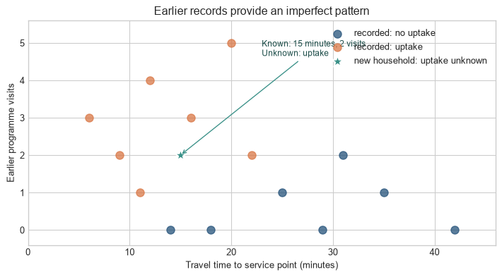

Let’s imagine that you run a small outreach programme. Each week, a list of households arrives, but your team has time to contact only a few. You need some basis for choosing where to start.
The programme has records from earlier rounds of outreach. For each household, the records show what was known before contact—age, travel time to the service point, and earlier programme visits—and what happened afterwards. A small extract might look like this:
Household
Age of respondent
Travel time to service point
Earlier programme visits
Took up programme?
A
24
6 minutes
0
Yes
B
58
42 minutes
1
No
C
37
12 minutes
1
Yes
D (new)
41
15 minutes
2
?
Households A, B, and C are earlier contacts: their outcomes are already in the records. Household D is different. You know the three facts in its row, but the last cell is blank because contact has not yet happened. The immediate question is whether the earlier rows can help you form a sensible estimate for D.
This is the kind of problem machine learning addresses. It uses earlier cases, where both the starting information and the later outcome are known, to build a rule for new cases, where only the starting information is available.
Level 1 - Intuition
You could choose a rule yourself: perhaps contact anyone who lives within ten minutes of the service point. That would be a perfectly ordinary way to proceed, but it uses only a judgement made in advance. Machine learning takes another route. It looks at the earlier households and asks which combinations of their recorded characteristics have tended to go with uptake.
The first figure makes this visible using only two characteristics: travel time and earlier visits. Orange and blue points are households from the earlier records. The teal star is household D. It appears at 15 minutes and two visits because those are the facts already known about D. Its colour is missing because its outcome is precisely what we are trying to estimate.
Code
import numpy as npimport matplotlib.pyplot as pltplt.style.use("seaborn-v0_8-whitegrid")blue, teal, orange ="#24527a", "#3a9188", "#d97745"# Illustrative records: each row is one earlier household contact.no_uptake = np.array([[42, 0], [35, 1], [29, 0], [25, 1], [18, 0], [31, 2], [14, 0]])uptake = np.array([[6, 3], [9, 2], [12, 4], [16, 3], [20, 5], [22, 2], [11, 1]])new_case = np.array([15, 2])fig, ax = plt.subplots(figsize=(7.5, 4.2))ax.scatter(no_uptake[:, 0], no_uptake[:, 1], color=blue, s=70, alpha=0.75, label="recorded: no uptake")ax.scatter(uptake[:, 0], uptake[:, 1], color=orange, s=70, alpha=0.75, label="recorded: uptake")ax.scatter(*new_case, color=teal, edgecolor="white", linewidth=1.5, s=180, marker="*", label="new household: uptake unknown", zorder=3)ax.annotate("Known: 15 minutes, 2 visits\nUnknown: uptake", xy=new_case, xytext=(23, 4.65), arrowprops={"arrowstyle": "->", "color": teal}, color="#1f4f4b", fontsize=9)ax.set(xlabel="Travel time to service point (minutes)", ylabel="Earlier programme visits", title="Earlier records provide an imperfect pattern")ax.set(xlim=(0, 46), ylim=(-0.4, 5.6), yticks=range(0, 6))ax.legend(frameon=False)plt.tight_layout()plt.show()

Figure 2.1: Earlier outreach records provide an imperfect pattern for estimating whether the new household, shown by the teal star, will take up the programme.
The star is not another example from which the model can learn; it is the household for which the programme needs an answer. It shares some characteristics with households that took up the programme and some with households that did not. A machine-learning model turns that incomplete resemblance into an estimate, perhaps saying that D has a 60 per cent chance of taking up the offer. The programme can then decide whether that estimate is useful enough to guide outreach.
Nothing in the chart provides a certain answer. The earlier records may be small, incomplete, or unrepresentative of the households now on the list. But they give us more to work with than a rule invented without looking at any past cases.
Machine learning. A way of using earlier cases to construct a rule for new ones. During training, the rule is adjusted using cases whose outcomes are known. During inference, the completed rule is applied to a new case whose outcome is still unknown.
Rules written by people
Ordinary software follows instructions written in advance. An outreach team could give the computer a rule such as:
if distance < 5 km and prior participation = 1:
predict high uptake
else:
predict low uptake
The computer applies this rule consistently, but the rule comes entirely from the team. If it gives poor decisions, someone has to decide which condition to change and how.
Patterns estimated from examples
Machine learning asks the computer to use the earlier cases to construct the rule. The resulting rule might be a weighted formula, a tree of decisions, or a neural network. The form will matter later; at this stage, the point is simply that the conditions are fitted from examples instead of being specified one by one beforehand.
The people running the programme still decide what counts as an earlier case, what outcome matters, which information can be used, and what to do with a prediction. Machine learning helps with one part of the work: finding a rule that uses the available records.
The next figure compares the two approaches. In the left panel, the rule has been written before looking at the points. In the right panel, the boundary has been estimated from them. The boundary is a visual way to show which combinations of age and travel time lead the rule towards one prediction or the other.
Figure 2.2: A hand-written rule fixes a boundary in advance; a fitted model estimates a boundary from labelled examples.
Both panels use the same illustrative observations. The left-hand rule ignores age, so two people at the same distance receive the same result regardless of age. The right-hand rule changes with both age and distance because it has been estimated from the points. Estimating a rule from examples does not guarantee that it will be useful, but it gives the programme a way to test whether the past records improve its decisions.
What the model needs
The example has four ingredients: earlier households, information recorded before contact, an outcome observed afterwards, and a new household for which the outcome is not yet known. We can now give these ingredients precise names and see how a computer stores them.
Level 2 - Mechanics
Go back to household D. The programme has three pieces of information about D: age, travel time, and earlier visits. It passes those pieces of information to the fitted rule. The rule returns an estimate, such as a probability of uptake. The diagram separates these three parts so that we can see what changes during training and what is available only after the outcome has been observed.
Figure 2.3: The mechanics of prediction: features enter a fitted model and produce an output.
The input box contains the information available when a prediction is needed. The middle box is the rule constructed from earlier cases. The final box is its answer for one household. In ordinary language, those are the facts we know, the rule we have learned, and the estimate we use.
The basic objects
The same prediction task can now be written compactly. A dataset has \(n\) cases, each described by \(p\) inputs. For case \(i\), let:
\(x_i\) be the feature vector for observation \(i\);
\(y_i\) be its observed outcome (the target or label);
\(f_\theta\) be a model with parameters \(\theta\);
\(\hat{y}_i=f_\theta(x_i)\) be the model’s prediction.
During training, the model compares its predictions with the observed outcomes and changes \(\theta\) to reduce the discrepancy. A parameter is a value learned in this fitting process. A hyperparameter is set outside it, for example the learning rate, tree depth, or regularisation strength.
The notation records the sequence in the diagram. \(x_i\) enters the fitted rule \(f_\theta\). Applying the rule produces \(\hat y_i\). The observed outcome \(y_i\) is used later to judge that prediction during training or evaluation. This notation states how the prediction is calculated; it says nothing about whether the inputs cause the outcome.
What the model can and cannot learn
The fitted rule can only use what is recorded in the earlier cases. If distance to the service point is measured poorly, the model receives a noisy version of distance. If earlier participation is missing for households who moved between administrative systems, the absence of a record may tell the model more than the recorded value. If outcomes are missing for one subgroup, fitting the model does not repair that absence.
Preparing the data is therefore part of defining the prediction problem. Decisions about coding, missing values, exclusions, time windows, and aggregation change who is represented and what pattern the model can find.
Baselines are part of the evidence
A prediction score has little meaning without a comparison. A simple baseline supplies one. For a yes/no outcome, it might always predict the most common outcome or assign every case the overall uptake rate. For a continuous outcome, it might predict the training mean for every case. A more complicated model that cannot improve on this comparison has not shown that it has found a useful pattern.
Baselines also expose misleading metrics. If 90 per cent of cases have no uptake, a classifier that always predicts no uptake will be 90 per cent accurate while identifying none of the households that do take up the programme. Accuracy alone then conceals the error that matters for outreach.
Evaluation follows the decision
The right evaluation depends on the decision. If failing to contact a household that would take up the programme is costly, it may be reasonable to prioritise recall: the share of actual uptake cases identified. If contact is expensive, precision may matter more: the share of contacted households that do take up the programme. If the model supplies probabilities, calibration asks a different question. Among cases assigned a probability near 0.7, did roughly 70 per cent take up the programme?
Figure 2.4: Calibration compares predicted probabilities with observed outcome frequencies.
The diagonal represents agreement between predicted probabilities and observed frequencies. The teal series stays close to that reference. The orange series is overconfident: its probabilities are more extreme than the observed outcome rates. For example, cases assigned a mean probability of 0.80 have an observed rate of 0.69 in this illustration. Calibration is estimated on held-out observations and is uncertain when few cases fall in a probability range. Guo and colleagues use reliability diagrams and related summaries to assess calibration in neural-network classifiers (Guo et al. 2017).
No metric makes this choice automatically. Each reveals one pattern of error and leaves other consequences unmeasured.
From task to use
The workflow follows the order in which decisions constrain one another. The target and prediction moment determine which information can be used. The data and representation determine what the model receives. Evaluation determines whether the fitted rule is adequate for its intended use.
Define the task. Specify the population, prediction moment, target, and decision that may use the prediction.
Construct the data. Identify observations, features, labels, missing values, and measurement limits.
Choose a representation. Convert raw inputs into numerical or categorical features the model can process.
Choose a model family. A linear model, tree, neural network, or another family imposes different assumptions and trade-offs.
Fit parameters. Use training data to choose parameter values that reduce a loss.
Tune hyperparameters. Use validation data or cross-validation to compare configurations.
Evaluate once on held-out data. The test set estimates performance on new cases.
Deploy and monitor. Check whether data, performance, and consequences change over time.
Fitting is not final evaluation
The training set is used to fit parameters. The validation set is used to choose among versions of the procedure, for example different model sizes or learning rates. The test set is held back until those choices are complete. Once the model is deployed, inference means applying the fitted model to new inputs.
If test results are repeatedly inspected and used to guide these decisions, the test data have become part of development. The final score is then too optimistic because information from the evaluation data has influenced the procedure.
The figure marks this separation. Training and validation belong to the development loop. The test set is used only after that loop has produced one fixed procedure.
Figure 2.5: A clean development workflow keeps the test set separate until final evaluation.
Three common learning settings
Supervised learning uses earlier cases for which the outcome is known. Regression predicts a continuous quantity such as income. Classification predicts a category or probability, such as uptake.
Unsupervised learning has no outcome to predict for each example. The task may be to identify clusters, compress a representation, or detect unusual observations.
Generative learning models how data are produced or represented so that it can generate, complete, or transform examples. Large language models are trained as generative models by predicting tokens, but they also use supervised and preference-based stages later in development.
These categories describe the information available to the training procedure, not the full behaviour of a deployed system. A single language model may be pretrained with a self-supervised next-token objective, fine-tuned with labelled demonstrations, and evaluated with a verifier or human preference signal. The stages use different forms of supervision even when the model architecture remains similar.
The prediction task now has its parts: information available before the decision, an outcome observed later, a fitted rule, and a way to judge its output. Level 3 writes the same process as equations and code. The notation is compact, but it refers to the objects already introduced here.
Level 3 - Mathematics & Code
Level 3 starts with the smallest model that makes the earlier ideas calculable. The equations state what enters the rule, what it returns, and how its error is summarised. The code implements the same objects.
A linear prediction model
The simplest useful model is a linear function:
\[
\hat{y}_i=w^\top x_i+b.
\]
Read the equation from left to right. \(x_i\) is the set of inputs for one case. \(w\) contains one number for each input, indicating how that input contributes to the prediction. The dot product \(w^\top x_i\) multiplies corresponding values and adds them. The intercept \(b\) shifts the result. The output \(\hat y_i\) is the prediction produced by the current parameter values. It does not yet tell us whether the prediction is accurate.
Here, \(w\) is a vector of feature weights and \(b\) is an intercept. A linear model is not assumed to be the true data-generating process. It is a useful starting point because its inputs and fitted values can be inspected directly.
For regression, a common loss is mean squared error:
This loss squares the difference between each prediction and its observed outcome, then averages those squared differences. A large miss counts more heavily than a small one. The following code uses a simulated continuous engagement score so that the linear model and mean-squared-error calculation can be shown without introducing a second classifier at the same time. The workflow is the same as for the uptake example: split earlier cases, fit on one part, and check predictions on cases not used for fitting.
\(R^2\) reports improvement over predicting the same training-set mean for every case. It is one summary for this regression example, not a universal measure of usefulness. A model can have a respectable \(R^2\) and still be too inaccurate for the decision it supports.
Residuals are information
For a regression model, the residual is:
\[
e_i=y_i-\hat y_i.
\]
Mean squared error reduces all residuals to one number. A residual plot retains their pattern. A funnel shape can indicate that error spread changes across the outcome range. A curve can indicate that the linear rule is missing a systematic relationship. Clusters can reveal groups with different measurement processes.
Figure 2.6: Predictions should be inspected alongside residuals rather than summarised by one score.
The code is simple, but the diagnostic principle also applies to neural networks and language models. One aggregate score can hide a systematic failure for a subgroup or part of the prediction range. Evaluation needs to inspect the cases and conditions that the reported score combines.
A confusion matrix
For a yes/no prediction, each case falls into one of four groups:
Precision asks: of the households predicted to take up the programme, how many did so? Recall asks: of the households that did take up the programme, how many did the model identify? The two can move in opposite directions when the decision threshold changes.
Classification and probabilities
For a yes/no outcome, a model may return a probability \(p_i\) between 0 and 1. A threshold then turns that probability into an action category:
Changing \(t\) changes who is treated as a predicted uptake case. A higher threshold usually contacts fewer households, reducing some false positives while missing more households who would have taken up the programme. The appropriate threshold follows from those consequences.
Figure 2.7: Changing the classification threshold changes the number of predicted positives.
Level 4 - Research & Systems
The preceding levels showed how to fit and assess a rule with earlier data. Using that rule in a real decision adds a further question: do the data, outcome, and error measures still describe the setting in which the prediction will be used? This level examines the boundary between a successful development exercise and a defensible deployed system.
The training objective is not the deployment objective
Training commonly minimises an average loss over observed examples. A programme may instead be judged by service access, safety, cost, equity, response time, or the quality of the decisions that follow. Training loss is therefore a proxy, not the full purpose of the system. This gap between the fitted model and its surrounding production system is a documented source of technical debt (Sculley et al. 2015).
If the recorded outcome is measured with error, the model may learn that measurement process. If the data exclude a population, a test score does not describe that population. If the setting changes after deployment, an earlier test set may no longer be informative. These are failures of the prediction claim, not defects that a lower training loss can repair.
Generalisation and overfitting
A model can fit its training cases closely and still perform poorly on new cases. This is overfitting. Generalisation is performance on observations from the population and conditions the prediction is intended to cover.
Additional flexibility is not automatically harmful. A more flexible model can represent a useful pattern that a simple rule misses. The question is whether that extra flexibility captures a pattern that recurs, or details specific to the earlier cases.
Overfitting is not limited to models with many visible parameters. It can also arise when development repeatedly tries feature definitions, thresholds, samples, or model configurations and reports the most favourable result. Those choices are part of the procedure being evaluated, even if the final model is small.
Figure 2.8: Training and test error can move in different directions as model flexibility increases.
Leakage, shift, and subgroup performance
Data leakage occurs when the model receives information that would not be available when the prediction is made, including information derived from the later outcome. A variable recording programme completion, for example, cannot help decide whom to contact before enrolment. Leakage can produce impressive development scores and disappointing performance once the model is used.
Distribution shift occurs when the people, records, or relationship between inputs and outcomes differ from those used for fitting. Monitoring should check input distributions, missingness, calibration, subgroup performance, and the consequences of decisions, not only one overall accuracy score.
Figure 2.9: Distribution shift can change the inputs presented to a model, the relationship between inputs and outcomes, or both.
The left panel shows an input-distribution change: households in deployment are located farther away than households in the training data. Such a shift does not by itself prove that the model is wrong, but it means that the model is being used more often in a region with less training support. The right panel shows a change in the conditional relationship: at the same distance, uptake is lower in deployment than the relationship estimated during training. In that case, retaining the original mapping produces systematically high probabilities. Empirical studies of dataset shift show that predictive accuracy and calibration can deteriorate together, and that calibration measured on the original test distribution need not survive the shift (Ovadia et al. 2019).
Fairness cannot be read from one metric. Groups can differ in outcome rates, error costs, calibration, and access to measurement. The assessment must return to the decision and institutional setting in which the prediction is used.
Missing values also have a history. If a household has no recorded visits because it was never reached, that absence may reflect earlier access to the programme. Replacing the missing value with a single average does not remove the pattern; it can hide it. A data audit asks who is measured, who is missing, and why.
The evaluation split must also match the intended use. Randomly splitting rows can overstate performance when several rows belong to the same household, institution, or time period. A model used for a future month should usually be tested on later data. A model used in new institutions should be tested on institutions absent from training. The split defines the generalisation claim.
Prediction is not causal inference
The model in this chapter predicts uptake from observed characteristics. It does not estimate the causal effect of offering the programme. To estimate that effect, we would need a causal design, such as a randomized experiment or a credible quasi-experimental strategy, together with assumptions about identification.
This distinction matters in policy work. A model may be good at predicting who would take up a service while being poor at identifying who would benefit from being offered the service. The first is a prediction problem; the second is closer to treatment-effect estimation.
Common misconceptions
Machine learning removes human judgement. Humans still define the task, data, target, evaluation, and use.
A high training score means the model is useful. Generalization and deployment performance matter.
A feature with predictive power is necessarily causal. Prediction and causal explanation are different goals.
The test set is a second training set. Repeatedly using it to make development decisions contaminates the estimate.
More complex models are always better. Complexity helps only when it captures stable, relevant structure.
Exercises
Identify the features, label, prediction, parameters, and hyperparameters in the programme-uptake example.
Give one example each of supervised, unsupervised, and generative learning.
Calculate the prediction from \(\hat y=2x+1\) when \(x=4\).
Calculate the MSE for predictions \((2,4,5)\) and targets \((3,3,6)\).
Explain what changes when a classification threshold moves from 0.5 to 0.8.
Give an example of data leakage in a programme-uptake model.
Why might a model have lower accuracy for one subgroup?
Explain why predicting uptake is not the same as predicting who benefits from treatment.
Design a train-validation-test split for data collected over time.
Describe one reason a model can perform well in testing but poorly after deployment.
Write two operational definitions of “programme uptake” that would create different labels. State when each label would be observed.
A feature records whether a household completed the programme. Explain why it is invalid for a model used to decide whom to contact before enrolment.
A classifier makes 80 correct predictions from 100 cases, but all 20 errors occur in one subgroup. State what accuracy does and does not establish about this result.
A model predicts a high probability of uptake for households near a service point. State one causal claim that the model cannot support and what additional design would be needed to assess it.
Name the data, target definition, decision point, and outcome measure that should appear in a short deployment record for the running example.
A programme changes its eligibility rule after the model is trained. Explain how this could change both the observed features and the meaning of the label.
Summary
Machine learning estimates a mapping from inputs to outputs using examples, a model family, a loss function, and an optimisation procedure. The basic workflow separates fitting, model selection, final evaluation, and inference. Useful ML practice requires attention to generalisation, leakage, distribution shift, subgroup performance, and the difference between prediction and causation.
Looking ahead
The prediction task now has its basic objects, but it does not yet say how one fitted rule is judged against another. Chapter 2 follows a prediction to its target and defines the loss that measures their discrepancy.
Further reading
The statistical-learning perspective is developed in Hastie, Tibshirani, and Friedman (2009). T. M. Mitchell (1997) provides a broad conceptual introduction to machine learning. For the operational risks that arise when models become part of larger products and institutions, see Sculley et al. (2015). The documentation of datasets and models is discussed by Gebru et al. (2021) and M. Mitchell et al. (2019). Calibration in modern neural networks is examined by Guo et al. (2017), while Ovadia et al. (2019) evaluate predictive uncertainty under dataset shift.
Gebru, Timnit et al. 2021. “Datasheets for Datasets.”Communications of the ACM 64 (12): 86–92. https://doi.org/10.1145/3458723.
Guo, Chuan, Geoff Pleiss, Yu Sun, and Kilian Q. Weinberger. 2017. “On Calibration of Modern Neural Networks.” In Proceedings of the 34th International Conference on Machine Learning, 70:1321–30. Proceedings of Machine Learning Research. PMLR. https://proceedings.mlr.press/v70/guo17a.html.
Mitchell, Margaret et al. 2019. “Model Cards for Model Reporting.” In Proceedings of the Conference on Fairness, Accountability, and Transparency, 220–29. https://doi.org/10.1145/3287560.3287596.
Mitchell, Tom M. 1997. Machine Learning. McGraw-Hill.
Ovadia, Yaniv, Emily Fertig, Jie Ren, Zachary Nado, D. Sculley, Sebastian Nowozin, Joshua V. Dillon, Balaji Lakshminarayanan, and Jasper Snoek. 2019. “Can You Trust Your Model’s Uncertainty? Evaluating Predictive Uncertainty Under Dataset Shift.” In Advances in Neural Information Processing Systems. Vol. 32. https://papers.nips.cc/paper/2019/hash/8558cb408c1d76621371888657d2eb1d-Abstract.html.
Sculley, D. et al. 2015. “Hidden Technical Debt in Machine Learning Systems.” In Advances in Neural Information Processing Systems. Vol. 28.
Source Code
---title: "What Is Machine Learning?"subtitle: "From examples to predictions"---## The problemLet’s imagine that you run a small outreach programme. Each week, a list of households arrives, but your team has time to contact only a few. You need some basis for choosing where to start.The programme has records from earlier rounds of outreach. For each household, the records show what was known before contact—age, travel time to the service point, and earlier programme visits—and what happened afterwards. A small extract might look like this:| Household | Age of respondent | Travel time to service point | Earlier programme visits | Took up programme? ||---|---:|---:|---:|---:|| A | 24 | 6 minutes | 0 | Yes || B | 58 | 42 minutes | 1 | No || C | 37 | 12 minutes | 1 | Yes || D (new) | 41 | 15 minutes | 2 | ? |Households A, B, and C are earlier contacts: their outcomes are already in the records. Household D is different. You know the three facts in its row, but the last cell is blank because contact has not yet happened. The immediate question is whether the earlier rows can help you form a sensible estimate for D.This is the kind of problem machine learning addresses. It uses earlier cases, where both the starting information and the later outcome are known, to build a rule for new cases, where only the starting information is available.## Level 1 - IntuitionYou could choose a rule yourself: perhaps contact anyone who lives within ten minutes of the service point. That would be a perfectly ordinary way to proceed, but it uses only a judgement made in advance. Machine learning takes another route. It looks at the earlier households and asks which combinations of their recorded characteristics have tended to go with uptake.The first figure makes this visible using only two characteristics: travel time and earlier visits. Orange and blue points are households from the earlier records. The teal star is household D. It appears at 15 minutes and two visits because those are the facts already known about D. Its colour is missing because its outcome is precisely what we are trying to estimate.```{python}#| label: fig-intuition-pattern#| fig-cap: "Earlier outreach records provide an imperfect pattern for estimating whether the new household, shown by the teal star, will take up the programme."#| fig-alt: "Households are plotted by travel time and earlier programme visits. Orange points show known uptake and blue points show known non-uptake. The teal star represents a new household with a travel time of fifteen minutes and two earlier visits, whose uptake outcome is not yet known."import numpy as npimport matplotlib.pyplot as pltplt.style.use("seaborn-v0_8-whitegrid")blue, teal, orange ="#24527a", "#3a9188", "#d97745"# Illustrative records: each row is one earlier household contact.no_uptake = np.array([[42, 0], [35, 1], [29, 0], [25, 1], [18, 0], [31, 2], [14, 0]])uptake = np.array([[6, 3], [9, 2], [12, 4], [16, 3], [20, 5], [22, 2], [11, 1]])new_case = np.array([15, 2])fig, ax = plt.subplots(figsize=(7.5, 4.2))ax.scatter(no_uptake[:, 0], no_uptake[:, 1], color=blue, s=70, alpha=0.75, label="recorded: no uptake")ax.scatter(uptake[:, 0], uptake[:, 1], color=orange, s=70, alpha=0.75, label="recorded: uptake")ax.scatter(*new_case, color=teal, edgecolor="white", linewidth=1.5, s=180, marker="*", label="new household: uptake unknown", zorder=3)ax.annotate("Known: 15 minutes, 2 visits\nUnknown: uptake", xy=new_case, xytext=(23, 4.65), arrowprops={"arrowstyle": "->", "color": teal}, color="#1f4f4b", fontsize=9)ax.set(xlabel="Travel time to service point (minutes)", ylabel="Earlier programme visits", title="Earlier records provide an imperfect pattern")ax.set(xlim=(0, 46), ylim=(-0.4, 5.6), yticks=range(0, 6))ax.legend(frameon=False)plt.tight_layout()plt.show()```The star is not another example from which the model can learn; it is the household for which the programme needs an answer. It shares some characteristics with households that took up the programme and some with households that did not. A machine-learning model turns that incomplete resemblance into an estimate, perhaps saying that D has a 60 per cent chance of taking up the offer. The programme can then decide whether that estimate is useful enough to guide outreach.Nothing in the chart provides a certain answer. The earlier records may be small, incomplete, or unrepresentative of the households now on the list. But they give us more to work with than a rule invented without looking at any past cases.::: {.concept-box .concept-core #concept-machine-learning data-term="Machine learning" data-domain="Foundations"}**Machine learning.** A way of using earlier cases to construct a rule for new ones. During **training**, the rule is adjusted using cases whose outcomes are known. During **inference**, the completed rule is applied to a new case whose outcome is still unknown.:::### Rules written by peopleOrdinary software follows instructions written in advance. An outreach team could give the computer a rule such as:```textif distance < 5 km and prior participation = 1: predict high uptakeelse: predict low uptake```The computer applies this rule consistently, but the rule comes entirely from the team. If it gives poor decisions, someone has to decide which condition to change and how.### Patterns estimated from examplesMachine learning asks the computer to use the earlier cases to construct the rule. The resulting rule might be a weighted formula, a tree of decisions, or a neural network. The form will matter later; at this stage, the point is simply that the conditions are fitted from examples instead of being specified one by one beforehand.The people running the programme still decide what counts as an earlier case, what outcome matters, which information can be used, and what to do with a prediction. Machine learning helps with one part of the work: finding a rule that uses the available records.The next figure compares the two approaches. In the left panel, the rule has been written before looking at the points. In the right panel, the boundary has been estimated from them. The boundary is a visual way to show which combinations of age and travel time lead the rule towards one prediction or the other.```{python}#| label: fig-rule-vs-learned#| fig-cap: "A hand-written rule fixes a boundary in advance; a fitted model estimates a boundary from labelled examples."#| fig-alt: "Two panels show the same household examples by age and distance. The hand-written rule uses a horizontal distance boundary, while the learned model uses an angled boundary estimated from the examples."from sklearn.linear_model import LogisticRegressionfrom matplotlib.lines import Line2Drng_rule = np.random.default_rng(17)n_households =180age_rule = rng_rule.uniform(18, 70, n_households)distance_rule = rng_rule.uniform(0, 20, n_households)uptake_probability =1/ (1+ np.exp(-(1.5-0.18* distance_rule +0.035* (age_rule -40))))uptake_rule = rng_rule.binomial(1, uptake_probability)rule_features = np.column_stack([age_rule, distance_rule])learned_boundary = LogisticRegression().fit(rule_features, uptake_rule)age_grid = np.linspace(18, 70, 220)distance_grid = np.linspace(0, 20, 220)age_mesh, distance_mesh = np.meshgrid(age_grid, distance_grid)grid_features = np.column_stack([age_mesh.ravel(), distance_mesh.ravel()])written_predictions = (distance_mesh <8).astype(int)learned_predictions = learned_boundary.predict(grid_features).reshape(age_mesh.shape)region_colours = ["#dce8f2", "#f8e1d5"]fig, axes = plt.subplots(1, 2, figsize=(10, 4.3), sharex=True, sharey=True)for ax, regions, panel_title in [ (axes[0], written_predictions, "Hand-written rule: distance < 8 km"), (axes[1], learned_predictions, "Pattern estimated from examples"),]: ax.contourf( age_mesh, distance_mesh, regions, levels=[-0.5, 0.5, 1.5], colors=region_colours, alpha=0.85, ) ax.contour( age_mesh, distance_mesh, regions, levels=[0.5], colors=[teal], linewidths=2.2, ) ax.scatter( age_rule[uptake_rule ==0], distance_rule[uptake_rule ==0], color=blue, marker="o", s=24, alpha=0.68, edgecolor="white", linewidth=0.4, ) ax.scatter( age_rule[uptake_rule ==1], distance_rule[uptake_rule ==1], color=orange, marker="^", s=30, alpha=0.72, edgecolor="white", linewidth=0.4, ) ax.set_title(panel_title) ax.set_xlabel("Age of respondent")axes[0].set_ylabel("Distance to service point (km)")legend_handles = [ Line2D([0], [0], marker="o", color="none", markerfacecolor=blue, markeredgecolor="white", markersize=7, label="Observed: no uptake"), Line2D([0], [0], marker="^", color="none", markerfacecolor=orange, markeredgecolor="white", markersize=8, label="Observed: uptake"), Line2D([0], [0], color=teal, linewidth=2.2, label="Prediction boundary"),]fig.legend(handles=legend_handles, loc="lower center", ncol=3, frameon=False, bbox_to_anchor=(0.5, -0.03))plt.tight_layout(rect=[0, 0.08, 1, 1])plt.show()```Both panels use the same illustrative observations. The left-hand rule ignores age, so two people at the same distance receive the same result regardless of age. The right-hand rule changes with both age and distance because it has been estimated from the points. Estimating a rule from examples does not guarantee that it will be useful, but it gives the programme a way to test whether the past records improve its decisions.### What the model needsThe example has four ingredients: earlier households, information recorded before contact, an outcome observed afterwards, and a new household for which the outcome is not yet known. We can now give these ingredients precise names and see how a computer stores them.## Level 2 - MechanicsGo back to household D. The programme has three pieces of information about D: age, travel time, and earlier visits. It passes those pieces of information to the fitted rule. The rule returns an estimate, such as a probability of uptake. The diagram separates these three parts so that we can see what changes during training and what is available only after the outcome has been observed.```{python}#| label: fig-mechanics-pipeline#| fig-cap: "The mechanics of prediction: features enter a fitted model and produce an output."#| fig-alt: "A horizontal diagram showing features entering a fitted model and producing a predicted probability."fig, ax = plt.subplots(figsize=(8.5, 2.2))ax.text(0.12, 0.5, "features\n(age, distance, prior participation)", ha="center", va="center", color="white", weight="bold", bbox={"boxstyle": "round,pad=0.6", "facecolor": blue})ax.text(0.50, 0.5, "fitted\nmodel", ha="center", va="center", color="white", weight="bold", bbox={"boxstyle": "round,pad=0.6", "facecolor": teal})ax.text(0.86, 0.5, "prediction\nP(uptake)", ha="center", va="center", color="white", weight="bold", bbox={"boxstyle": "round,pad=0.6", "facecolor": orange})ax.annotate("", xy=(0.39, 0.5), xytext=(0.27, 0.5), arrowprops={"arrowstyle": "->", "lw": 2, "color": "#666666"})ax.annotate("", xy=(0.76, 0.5), xytext=(0.62, 0.5), arrowprops={"arrowstyle": "->", "lw": 2, "color": "#666666"})ax.set_xlim(0, 1); ax.set_ylim(0, 1); ax.axis("off")plt.tight_layout()plt.show()```The input box contains the information available when a prediction is needed. The middle box is the rule constructed from earlier cases. The final box is its answer for one household. In ordinary language, those are the facts we know, the rule we have learned, and the estimate we use.### The basic objectsThe same prediction task can now be written compactly. A dataset has $n$ cases, each described by $p$ inputs. For case $i$, let:- $x_i$ be the feature vector for observation $i$;- $y_i$ be its observed outcome (the target or label);- $f_\theta$ be a model with parameters $\theta$;- $\hat{y}_i=f_\theta(x_i)$ be the model’s prediction.During training, the model compares its predictions with the observed outcomes and changes $\theta$ to reduce the discrepancy. A **parameter** is a value learned in this fitting process. A **hyperparameter** is set outside it, for example the learning rate, tree depth, or regularisation strength.The notation records the sequence in the diagram. $x_i$ enters the fitted rule $f_\theta$. Applying the rule produces $\hat y_i$. The observed outcome $y_i$ is used later to judge that prediction during training or evaluation. This notation states how the prediction is calculated; it says nothing about whether the inputs cause the outcome.### What the model can and cannot learnThe fitted rule can only use what is recorded in the earlier cases. If distance to the service point is measured poorly, the model receives a noisy version of distance. If earlier participation is missing for households who moved between administrative systems, the absence of a record may tell the model more than the recorded value. If outcomes are missing for one subgroup, fitting the model does not repair that absence.Preparing the data is therefore part of defining the prediction problem. Decisions about coding, missing values, exclusions, time windows, and aggregation change who is represented and what pattern the model can find.### Baselines are part of the evidenceA prediction score has little meaning without a comparison. A simple baseline supplies one. For a yes/no outcome, it might always predict the most common outcome or assign every case the overall uptake rate. For a continuous outcome, it might predict the training mean for every case. A more complicated model that cannot improve on this comparison has not shown that it has found a useful pattern.Baselines also expose misleading metrics. If 90 per cent of cases have no uptake, a classifier that always predicts no uptake will be 90 per cent accurate while identifying none of the households that do take up the programme. Accuracy alone then conceals the error that matters for outreach.### Evaluation follows the decisionThe right evaluation depends on the decision. If failing to contact a household that would take up the programme is costly, it may be reasonable to prioritise recall: the share of actual uptake cases identified. If contact is expensive, precision may matter more: the share of contacted households that do take up the programme. If the model supplies probabilities, calibration asks a different question. Among cases assigned a probability near 0.7, did roughly 70 per cent take up the programme?```{python}#| label: fig-calibration#| fig-cap: "Calibration compares predicted probabilities with observed outcome frequencies."#| fig-alt: "A reliability diagram compares a well-calibrated model with an overconfident model. The calibrated series remains near the diagonal, while the overconfident series lies closer to one half than its predictions imply."probability_bins = np.arange(0.1, 1.0, 0.1)observed_calibrated = np.array([0.09, 0.21, 0.31, 0.39, 0.51, 0.61, 0.68, 0.79, 0.91])observed_overconfident = np.array([0.24, 0.31, 0.39, 0.46, 0.50, 0.55, 0.62, 0.69, 0.76])fig, ax = plt.subplots(figsize=(7.2, 5.2))ax.plot([0, 1], [0, 1], color="#777777", linestyle="--", linewidth=1.5, label="Perfect calibration")ax.plot(probability_bins, observed_calibrated, color=teal, marker="o", linewidth=2.4, markersize=6, label="Well calibrated")ax.plot(probability_bins, observed_overconfident, color=orange, marker="s", linewidth=2.4, markersize=5.5, label="Overconfident")ax.fill_between( probability_bins, probability_bins, observed_overconfident, color=orange, alpha=0.10,)ax.annotate("Predicted 0.80;\nobserved rate 0.69", xy=(0.8, 0.69), xytext=(0.55, 0.84), arrowprops={"arrowstyle": "->", "color": orange}, color="#4a4a4a",)ax.set( xlim=(0, 1), ylim=(0, 1), xlabel="Mean predicted probability", ylabel="Observed outcome frequency", title="A reliability diagram reveals probability error",)ax.set_aspect("equal", adjustable="box")ax.legend(frameon=False, loc="upper left")plt.tight_layout()plt.show()```The diagonal represents agreement between predicted probabilities and observed frequencies. The teal series stays close to that reference. The orange series is overconfident: its probabilities are more extreme than the observed outcome rates. For example, cases assigned a mean probability of 0.80 have an observed rate of 0.69 in this illustration. Calibration is estimated on held-out observations and is uncertain when few cases fall in a probability range. Guo and colleagues use reliability diagrams and related summaries to assess calibration in neural-network classifiers [@guo2017calibration].No metric makes this choice automatically. Each reveals one pattern of error and leaves other consequences unmeasured.### From task to useThe workflow follows the order in which decisions constrain one another. The target and prediction moment determine which information can be used. The data and representation determine what the model receives. Evaluation determines whether the fitted rule is adequate for its intended use.1. **Define the task.** Specify the population, prediction moment, target, and decision that may use the prediction.2. **Construct the data.** Identify observations, features, labels, missing values, and measurement limits.3. **Choose a representation.** Convert raw inputs into numerical or categorical features the model can process.4. **Choose a model family.** A linear model, tree, neural network, or another family imposes different assumptions and trade-offs.5. **Fit parameters.** Use training data to choose parameter values that reduce a loss.6. **Tune hyperparameters.** Use validation data or cross-validation to compare configurations.7. **Evaluate once on held-out data.** The test set estimates performance on new cases.8. **Deploy and monitor.** Check whether data, performance, and consequences change over time.### Fitting is not final evaluationThe training set is used to fit parameters. The validation set is used to choose among versions of the procedure, for example different model sizes or learning rates. The test set is held back until those choices are complete. Once the model is deployed, **inference** means applying the fitted model to new inputs.If test results are repeatedly inspected and used to guide these decisions, the test data have become part of development. The final score is then too optimistic because information from the evaluation data has influenced the procedure.The figure marks this separation. Training and validation belong to the development loop. The test set is used only after that loop has produced one fixed procedure.```{python}#| label: fig-data-split#| fig-cap: "A clean development workflow keeps the test set separate until final evaluation."#| fig-alt: "A flow diagram showing data divided into training, validation, and test sets, with the test set used only at final evaluation."import numpy as npimport matplotlib.pyplot as pltfrom matplotlib.patches import Rectangleplt.style.use("seaborn-v0_8-whitegrid")blue, teal, orange ="#24527a", "#3a9188", "#d97745"rng = np.random.default_rng(7)fig, ax = plt.subplots(figsize=(9, 2.2))blocks = [(0.02, 0.55, 0.48, "Training\nfit parameters", blue), (0.52, 0.55, 0.22, "Validation\nchoose model", teal), (0.76, 0.55, 0.22, "Test\nfinal estimate", orange)]for x, y, width, label, color in blocks: ax.add_patch(Rectangle((x, y), width, 0.28, facecolor=color, alpha=0.85)) ax.text(x + width /2, y +0.14, label, ha="center", va="center", color="white", weight="bold")ax.annotate("development decisions", xy=(0.62, 0.48), xytext=(0.25, 0.18), arrowprops={"arrowstyle": "->", "color": "#5c6670"}, ha="center")ax.annotate("used once", xy=(0.87, 0.48), xytext=(0.87, 0.18), arrowprops={"arrowstyle": "->", "color": "#5c6670"}, ha="center")ax.set_xlim(0, 1); ax.set_ylim(0, 1); ax.axis("off")plt.tight_layout()plt.show()```### Three common learning settings**Supervised learning** uses earlier cases for which the outcome is known. Regression predicts a continuous quantity such as income. Classification predicts a category or probability, such as uptake.**Unsupervised learning** has no outcome to predict for each example. The task may be to identify clusters, compress a representation, or detect unusual observations.**Generative learning** models how data are produced or represented so that it can generate, complete, or transform examples. Large language models are trained as generative models by predicting tokens, but they also use supervised and preference-based stages later in development.These categories describe the information available to the training procedure, not the full behaviour of a deployed system. A single language model may be pretrained with a self-supervised next-token objective, fine-tuned with labelled demonstrations, and evaluated with a verifier or human preference signal. The stages use different forms of supervision even when the model architecture remains similar.The prediction task now has its parts: information available before the decision, an outcome observed later, a fitted rule, and a way to judge its output. Level 3 writes the same process as equations and code. The notation is compact, but it refers to the objects already introduced here.## Level 3 - Mathematics & CodeLevel 3 starts with the smallest model that makes the earlier ideas calculable. The equations state what enters the rule, what it returns, and how its error is summarised. The code implements the same objects.### A linear prediction modelThe simplest useful model is a linear function:$$\hat{y}_i=w^\top x_i+b.$$Read the equation from left to right. $x_i$ is the set of inputs for one case. $w$ contains one number for each input, indicating how that input contributes to the prediction. The dot product $w^\top x_i$ multiplies corresponding values and adds them. The intercept $b$ shifts the result. The output $\hat y_i$ is the prediction produced by the current parameter values. It does not yet tell us whether the prediction is accurate.Here, $w$ is a vector of feature weights and $b$ is an intercept. A linear model is not assumed to be the true data-generating process. It is a useful starting point because its inputs and fitted values can be inspected directly.For regression, a common loss is mean squared error:$$\operatorname{MSE}=\frac{1}{n}\sum_{i=1}^n(\hat{y}_i-y_i)^2.$$This loss squares the difference between each prediction and its observed outcome, then averages those squared differences. A large miss counts more heavily than a small one. The following code uses a simulated continuous engagement score so that the linear model and mean-squared-error calculation can be shown without introducing a second classifier at the same time. The workflow is the same as for the uptake example: split earlier cases, fit on one part, and check predictions on cases not used for fitting.```{python}import numpy as npimport pandas as pdfrom sklearn.model_selection import train_test_splitfrom sklearn.linear_model import LinearRegressionfrom sklearn.metrics import mean_squared_error, r2_scorerng = np.random.default_rng(7)n =120distance = rng.uniform(1, 25, n)prior_participation = rng.integers(0, 2, n)age = rng.uniform(18, 75, n)uptake_score =0.75-0.025* distance +0.18* prior_participation + rng.normal(0, 0.08, n)data = pd.DataFrame({"distance": distance,"prior_participation": prior_participation,"age": age,"uptake_score": uptake_score,})X = data[["distance", "prior_participation", "age"]]y = data["uptake_score"]X_train, X_test, y_train, y_test = train_test_split(X, y, test_size=0.25, random_state=7)model = LinearRegression().fit(X_train, y_train)predictions = model.predict(X_test)print(f"test MSE: {mean_squared_error(y_test, predictions):.3f}")print(f"test R²: {r2_score(y_test, predictions):.3f}")```$R^2$ reports improvement over predicting the same training-set mean for every case. It is one summary for this regression example, not a universal measure of usefulness. A model can have a respectable $R^2$ and still be too inaccurate for the decision it supports.### Residuals are informationFor a regression model, the residual is:$$e_i=y_i-\hat y_i.$$Mean squared error reduces all residuals to one number. A residual plot retains their pattern. A funnel shape can indicate that error spread changes across the outcome range. A curve can indicate that the linear rule is missing a systematic relationship. Clusters can reveal groups with different measurement processes.```{python}#| label: fig-regression-residuals#| fig-cap: "Predictions should be inspected alongside residuals rather than summarised by one score."#| fig-alt: "Two panels showing observed versus predicted scores and residuals against predicted scores."residuals = y_test.to_numpy() - predictionsfig, axes = plt.subplots(1, 2, figsize=(9, 3.8))axes[0].scatter(y_test, predictions, color=blue, alpha=0.7)limits = [min(y_test.min(), predictions.min()), max(y_test.max(), predictions.max())]axes[0].plot(limits, limits, color=orange, linestyle="--")axes[0].set(xlabel="Observed score", ylabel="Predicted score", title="Observed and predicted")axes[1].scatter(predictions, residuals, color=teal, alpha=0.7)axes[1].axhline(0, color=orange, linestyle="--")axes[1].set(xlabel="Predicted score", ylabel="Residual", title="Residual diagnostic")plt.tight_layout()plt.show()```The code is simple, but the diagnostic principle also applies to neural networks and language models. One aggregate score can hide a systematic failure for a subgroup or part of the prediction range. Evaluation needs to inspect the cases and conditions that the reported score combines.### A confusion matrixFor a yes/no prediction, each case falls into one of four groups:|| Observed positive | Observed negative ||---|---:|---:|| Predicted positive | True positive | False positive || Predicted negative | False negative | True negative |From these counts:$$\text{precision}=\frac{TP}{TP+FP},\qquad\text{recall}=\frac{TP}{TP+FN}.$$Precision asks: of the households predicted to take up the programme, how many did so? Recall asks: of the households that did take up the programme, how many did the model identify? The two can move in opposite directions when the decision threshold changes.### Classification and probabilitiesFor a yes/no outcome, a model may return a probability $p_i$ between 0 and 1. A threshold then turns that probability into an action category:$$\hat{y}_i=\begin{cases}1 & p_i\geq t\\0 & p_i<t.\end{cases}$$Changing $t$ changes who is treated as a predicted uptake case. A higher threshold usually contacts fewer households, reducing some false positives while missing more households who would have taken up the programme. The appropriate threshold follows from those consequences.```{python}#| label: fig-threshold#| fig-cap: "Changing the classification threshold changes the number of predicted positives."#| fig-alt: "A histogram of predicted probabilities separated by a vertical threshold line."positive =rng.beta(7,3,70)negative =rng.beta(2,6,70)threshold =0.5fig, ax =plt.subplots(figsize=(8,4.2))ax.hist(negative, bins=12, alpha=0.65, color=blue, label="Observed negative")ax.hist(positive, bins=12, alpha=0.65, color=orange, label="Observed positive")ax.axvline(threshold, color=teal, linewidth=2.5, linestyle="--", label="threshold = 0.5")ax.set(xlabel="Predicted probability", ylabel="Number of observations", title="A threshold converts probabilities into decisions")ax.legend(frameon=False)plt.tight_layout()plt.show()```## Level 4- Research & SystemsThe preceding levels showed how to fit and assess a rule with earlier data. Using that rule in a real decision adds a further question: do the data, outcome, and error measures still describe the setting in which the prediction will be used? This level examines the boundary between a successful development exercise and a defensible deployed system.### The training objective is not the deployment objectiveTraining commonly minimises an average loss over observed examples. A programme may instead be judged by service access, safety, cost, equity, response time, or the quality of the decisions that follow. Training loss is therefore a proxy, not the full purpose of the system. This gap between the fitted model and its surrounding production system is a documented source of technical debt [@sculley2015].If the recorded outcome is measured with error, the model may learn that measurement process. If the data exclude a population, a test score does not describe that population. If the setting changes after deployment, an earlier test set may no longer be informative. These are failures of the prediction claim, not defects that a lower training loss can repair.### Generalisation and overfittingA model can fit its training cases closely and still perform poorly on new cases. This is overfitting. Generalisation is performance on observations from the population and conditions the prediction is intended to cover.Additional flexibility is not automatically harmful. A more flexible model can represent a useful pattern that a simple rule misses. The question is whether that extra flexibility captures a pattern that recurs, or details specific to the earlier cases.Overfitting is not limited to models with many visible parameters. It can also arise when development repeatedly tries feature definitions, thresholds, samples, or model configurations and reports the most favourable result. Those choices are part of the procedure being evaluated, even if the final model is small.```{python}#| label: fig-generalization#| fig-cap: "Training and test error can move in different directions as model flexibility increases."#| fig-alt: "A conceptual plot showing training error falling while test error falls and then rises as model complexity increases."complexity =np.linspace(0.1,10,100)train_error =0.9/ (complexity +0.3)+0.04test_error =0.7/ (complexity +0.4)+0.012 * (complexity -3.5) ** 2+0.12fig, ax =plt.subplots(figsize=(8,4.4))ax.plot(complexity, train_error, color=blue, linewidth=2.5, label="training error")ax.plot(complexity, test_error, color=orange, linewidth=2.5, label="test error")ax.axvline(complexity[np.argmin(test_error)], color=teal, linestyle="--", label="best held-out performance")ax.set(xlabel="Model flexibility", ylabel="Error", title="Generalization is the target")ax.legend(frameon=False)plt.tight_layout()plt.show()```### Leakage, shift, and subgroup performance**Data leakage** occurs when the model receives information that would not be available when the prediction is made, including information derived from the later outcome. A variable recording programme completion, for example, cannot help decide whom to contact before enrolment. Leakage can produce impressive development scores and disappointing performance once the model is used.**Distribution shift** occurs when the people, records, or relationship between inputs and outcomes differ from those used for fitting. Monitoring should check input distributions, missingness, calibration, subgroup performance, and the consequences of decisions, not only one overall accuracy score.```{python}#| label: fig-distribution-shift#| fig-cap: "Distribution shift can change the inputs presented to a model, the relationship between inputs and outcomes, or both."#| fig-alt: "The left panel shows deployment households located farther from a service point than training households. The right panel shows the probability of uptake changing at the same distance between training and deployment."distance_shift =np.linspace(0,25,300)def normal_density(values, mean, sd): return np.exp(-0.5 * ((values - mean) / sd) ** 2)/ (sd * np.sqrt(2 * np.pi))training_density =normal_density(distance_shift, mean=6.5, sd=3.0)deployment_density =normal_density(distance_shift, mean=12.0, sd=4.0)training_relationship =1/ (1 + np.exp(-(1.8 -0.20 * distance_shift)))deployment_relationship =1/ (1 + np.exp(-(1.0 -0.20 * distance_shift)))fig, axes =plt.subplots(1,2, figsize=(10,4.1))axes[0].fill_between(distance_shift, training_density, color=blue, alpha=0.22)axes[0].plot(distance_shift, training_density, color=blue, linewidth=2.4, label="Training population")axes[0].fill_between(distance_shift, deployment_density, color=orange, alpha=0.20)axes[0].plot(distance_shift, deployment_density, color=orange, linewidth=2.4, label="Deployment population")axes[0].set( xlabel="Distance to service point (km)", ylabel="Relative density", title="The input population changes",)axes[0].set_yticks([])axes[0].legend(frameon=False)axes[1].plot(distance_shift, training_relationship, color=blue, linewidth=2.5, label="Relationship learned in training")axes[1].plot(distance_shift, deployment_relationship, color=orange, linewidth=2.5, linestyle="--", label="Relationship at deployment")axes[1].axvline(8, color=teal, linewidth=1.2, alpha=0.7)axes[1].text(8.35,0.96,"same distance", color="#4a4a4a", va="top")axes[1].scatter( [8,8], [1/ (1 + np.exp(-(1.8 -0.20 * 8))),1/ (1 + np.exp(-(1.0 -0.20 * 8))),], color=[blue, orange], s=55, zorder=3,)axes[1].set( xlabel="Distance to service point (km)", ylabel="Probability of uptake", title="The outcome relationship changes", ylim=(0,1),)axes[1].legend(frameon=False)plt.tight_layout()plt.show()```The left panel shows an input-distribution change: households in deployment are located farther away than households in the training data. Such a shift does not by itself prove that the model is wrong, but it means that the model is being used more often in a region with less training support. The right panel shows a change in the conditional relationship: at the same distance, uptake is lower in deployment than the relationship estimated during training. In that case, retaining the original mapping produces systematically high probabilities. Empirical studies of dataset shift show that predictive accuracy and calibration can deteriorate together, and that calibration measured on the original test distribution need not survive the shift [@ovadia2019].**Fairness** cannot be read from one metric. Groups can differ in outcome rates, error costs, calibration, and access to measurement. The assessment must return to the decision and institutional setting in which the prediction is used.Missing values also have a history. If a household has no recorded visits because it was never reached, that absence may reflect earlier access to the programme. Replacing the missing value with a single average does not remove the pattern; it can hide it. A data audit asks who is measured, who is missing, and why.The evaluation split must also match the intended use. Randomly splitting rows can overstate performance when several rows belong to the same household, institution, or time period. A model used for a future month should usually be tested on later data. A model used in new institutions should be tested on institutions absent from training. The split defines the generalisation claim.### Prediction is not causal inferenceThe model in this chapter predicts uptake from observed characteristics. It does not estimate the causal effect of offering the programme. To estimate that effect, we would need a causal design, such as a randomized experiment or a credible quasi-experimental strategy, together with assumptions about identification.This distinction matters in policy work. A model may be good at predicting who would take up a service while being poor at identifying who would benefit from being offered the service. The first is a prediction problem; the second is closer to treatment-effect estimation.## Common misconceptions- **Machine learning removes human judgement.** Humans still define the task, data, target, evaluation, and use.- **A high training score means the model is useful.** Generalization and deployment performance matter.- **A feature with predictive power is necessarily causal.** Prediction and causal explanation are different goals.- **The test set is a second training set.** Repeatedly using it to make development decisions contaminates the estimate.- **More complex models are always better.** Complexity helps only when it captures stable, relevant structure.## Exercises1. Identify the features, label, prediction, parameters, and hyperparameters in the programme-uptake example.2. Give one example each of supervised, unsupervised, and generative learning.3. Calculate the prediction from $\hat y=2x+1$ when $x=4$.4. Calculate the MSE for predictions $(2,4,5)$ and targets $(3,3,6)$.5. Explain what changes when a classification threshold moves from 0.5 to 0.8.6. Give an example of data leakage in a programme-uptake model.7. Why might a model have lower accuracy for one subgroup?8. Explain why predicting uptake is not the same as predicting who benefits from treatment.9. Design a train-validation-test split for data collected over time.10. Describe one reason a model can perform well in testing but poorly after deployment.11. Write two operational definitions of “programme uptake” that would create different labels. State when each label would be observed.12. A feature records whether a household completed the programme. Explain why it is invalid for a model used to decide whom to contact before enrolment.13. A classifier makes 80 correct predictions from 100 cases, but all 20 errors occur in one subgroup. State what accuracy does and does not establish about this result.14. A model predicts a high probability of uptake for households near a service point. State one causal claim that the model cannot support and what additional design would be needed to assess it.15. Name the data, target definition, decision point, and outcome measure that should appear in a short deployment record for the running example.16. A programme changes its eligibility rule after the model is trained. Explain how this could change both the observed features and the meaning of the label.## SummaryMachine learning estimates a mapping from inputs to outputs using examples, a model family, a loss function, and an optimisation procedure. The basic workflow separates fitting, model selection, final evaluation, and inference. Useful ML practice requires attention to generalisation, leakage, distribution shift, subgroup performance, and the difference between prediction and causation.## Looking aheadThe prediction task now has its basic objects, but it does not yet say how one fitted rule is judged against another. [Chapter 2](02-models-predictions-loss.qmd) follows a prediction to its target and defines the loss that measures their discrepancy.## Further readingThe statistical-learning perspective is developed in @hastie2009. @mitchell1997 provides a broad conceptual introduction to machine learning. For the operational risks that arise when models become part of larger products and institutions, see @sculley2015. The documentation of datasets and models is discussed by @gebru2021 and @mitchell2019. Calibration in modern neural networks is examined by @guo2017calibration, while @ovadia2019 evaluate predictive uncertainty under dataset shift.